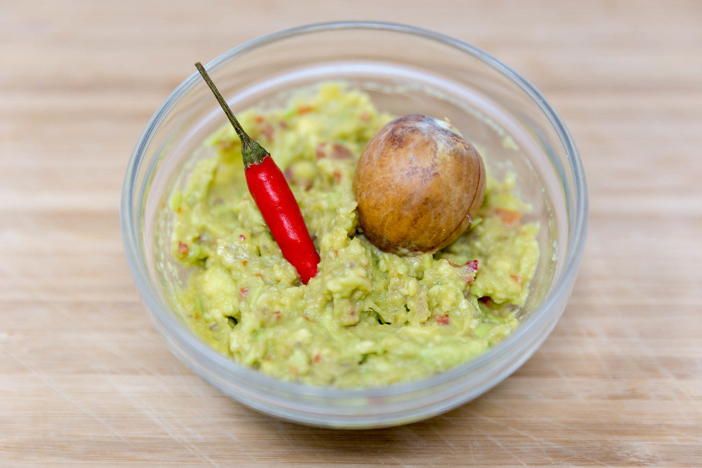

Fresh Guacamole

Photo credit by Marco Verch via CCNull.
Create the perfect side dish for any party with our fresh guacamole recipe
Ingredients:
- 1 avocado, pitted and diced
- 1 roma tomato, diced
- 1 serrano chile pepper, seeded and minced
- 6 cilantro leaves, minced
- 1 teaspoon Worcestershire sauce
- 3 drops of choice hotsauce
- 1 tablespoon of fresh lime juice
- Half red onion, diced
- Half teaspoon of kosher salt
- Half teaspoon of ground black pepper
- Half teaspoon of garlic powder
Steps:
- Set avocado pit aside for later use
- Combine all ingredients in large bowl and mix thoroughly
- Pour lime juice over top and serve, or chill for later
Extra Step:
- Take avocado pit and crush at bottom of guacamole bowl to preserve for longer and refrigerate